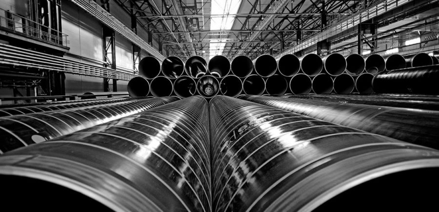

Что такое металлопрокат?
Такое понятие, как «металлопрокат» включает в себя крайне широкий ассортимент продукции. Фактически металлопрокат – это все, что изготовлено из металла методом прокатки. Сегодня металлопрокатом называют готовый профиль промышленного производства, недорогой и достаточно качественный. Из него производятся самые разные металлические изделия, его также применяют в строительных работах.
Высокая популярность этого продукта обусловлена его превосходными свойствами: он долговечен, надежен, отличается твердостью и прочностью, не покрывается трещинами, отлично переносит перепады температуры, не ржавеет и не горит.
Черный и цветной металлопрокат
Металлопрокат традиционно делится на черный и цветной. Изделия из стали различных сортов – это прокат черный, уникальный материал, подходящий для самых разных инструментов и видов техники. Качественный черный металлопрокат максимально долговечен, он практически незаменим, особенно в строительной отрасли.
Изделия из сплавов цветных металлов – прокат цветной, его принято классифицировать в зависимости от свойств. Это легкие металлы и тяжелые, тугоплавкие, редкоземельные, благородные, радиоактивные и прочие.
Категории металлопроката
Ассортимент можно разбить на следующие категории:
- Металлопрокат листовой – к нему относятся листы оцинкованные, холодно - и горячекатаные, а также рулоны. Горячекатаные листы, в свою очередь, бывают тонкими и толстыми.
- Сортовой продукт – простой и фасонный. Простой – это квадрат и полоса плоского перереза, фасонный – профили особого назначения (например, для нефтяной отрасли) и продукция «общего пользования» (угловой профиль, швеллер).
- Трубы металлопрокатные, круглые (сварные и без швов), профильные, с измененным размером перереза
- Металлопрокат художественный – из него изготавливают фигурные решетки, ограждения со сложным орнаментом.
Сортовое разнообразие металлопроката позволяет получить долговечные, надежные и очень прочные конструкции.
Сферы применения металлопроката
Металл, благодаря его твердости, легкости, прочности, можно назвать идеальным материалом для строительной отрасли. Спектр его использования крайне разнообразен:
- профильная арматура применяется для создания ж/б конструкций и арматурных каркасов;
- металлические балки используют, чтобы соединять конструкции колонн с перекрытиями, балками двутавровыми усиливают опоры и мосты;
- из стальных листов делают ступени, их используют для изготовления различных конструкций;
- полосы из стали используются, как готовые элементы, для декоративных, отделочных работ;
- прокатные уголки – это составляющая металлических конструкций, ими также усиливают швеллеры, бетон, балки в монолитных конструкциях.
В самых разных областях промышленности (машиностроении, транспортной сфере, оборонной и электротехнической промышленности) применяют сортовой и листовой металлопрокат, в различных целях.
В наше время этот продукт предлагает огромное количество отечественных производителей, и оптом, и в розницу. В основном потребители проката сталкиваются с массой предложений, однако не всегда могут найти компанию, заслуживающую доверия, которая занимается реализацией качественного металлопроката по разумной стоимости. Именно поэтому к выбору поставщика следует подходить крайне ответственно, останавливая свой выбор исключительно на надежных, проверенных партнерах. Только так можно купить металлопрокат, недорогой, качественный и надежный.